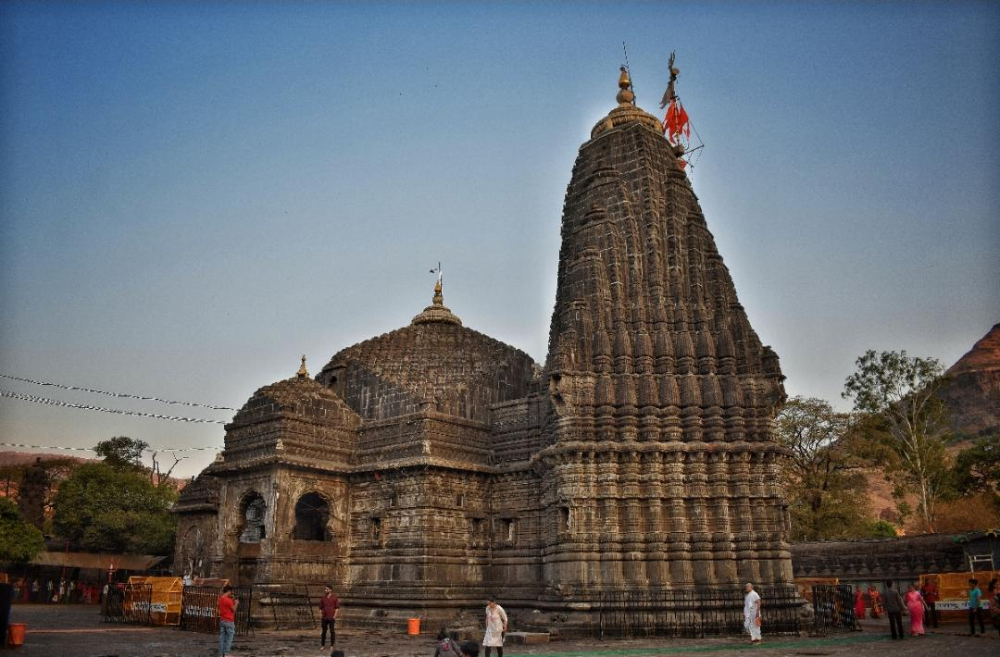
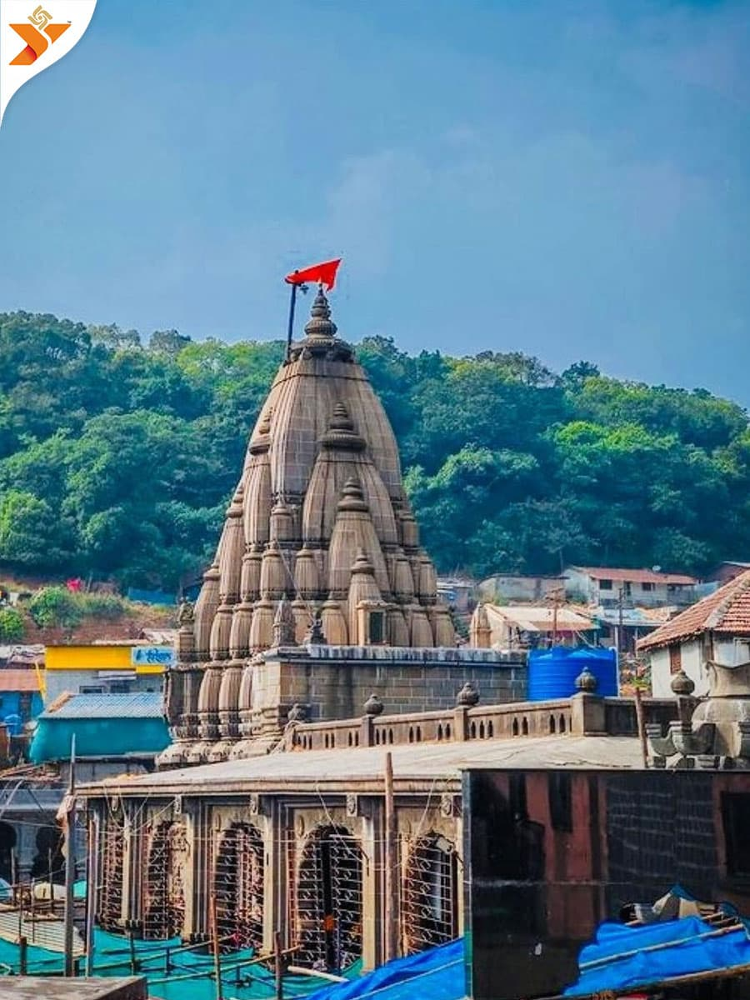
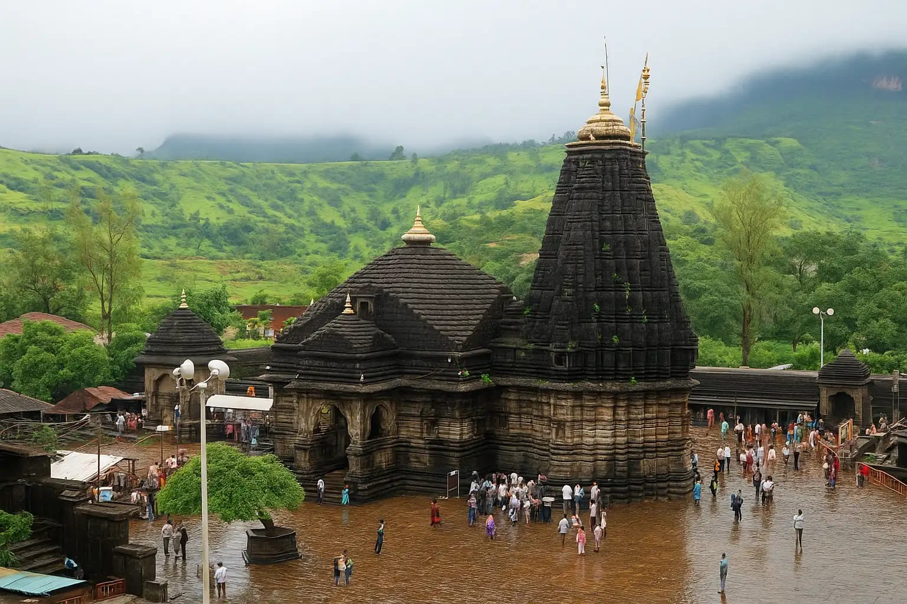

Pune to 3 Jyotirlinga Tour Package
A S Travel Solution offers a dedicated Pune to 3 Jyotirlinga cab package for devotees who want Bhimashankar, Trimbakeshwar, and Grishneshwar darshan in one comfortable plan. This package is useful for families, senior citizens, and groups who prefer private pickup, flexible halts, and clean outstation vehicles instead of managing multiple travel changes.
Package Highlights
- Doorstep pickup from home, hotel, office, or airport in Pune
- Temple-focused route planning with sensible meal and rest halts
- Useful for devotees who want a private cab for the full circuit
- Flexible return timing based on darshan flow and overnight stay
Good Fit For
- Families planning a complete Jyotirlinga route by road
- Groups that want luggage support and one vehicle throughout
- Travellers avoiding train changes or separate local taxis
- Custom temple trips with hotel stay or next-day return planning
Pune to 3 Jyotirlinga Cab Service
A S Travel Solution arranges comfortable outstation travel for devotees who want a smoother temple circuit from Pune. Our drivers support families with luggage, timely starts, and route coordination so the journey feels organized from pickup to final drop.
Darshan Route and Stay Planning
The order of Bhimashankar, Trimbakeshwar, and Grishneshwar can be adjusted according to your start time, temple rush, and hotel preference. We can help you decide whether a relaxed overnight plan or a tighter schedule will suit your group better.
Call or WhatsApp Booking
For fare, vehicle selection, and custom timing, call +91 9764642921 or +91 9764642991, or send your route on WhatsApp.